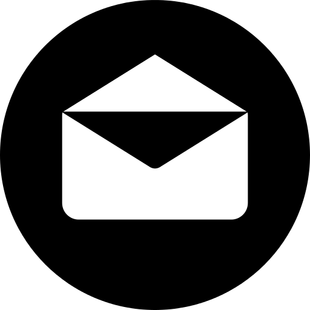
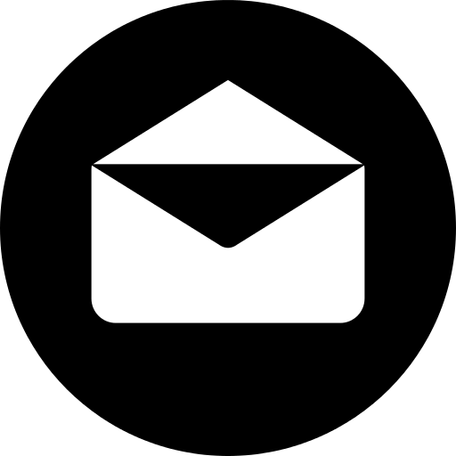

Birla Institute of Technology and Sciences
K.K Birla Goa Campus
En
trepreneurialHaving the perspective to see an opportunity and the talent to create value from that opportunity.
Act
ionThe willingness to do something and the commitment to see it through even when the outcome is not guaranteed.
Us
A group of people who see themselves connected in some important way; individuals that are part of a greater whole.
// Connect with us
Join the conversation and connect with us on Facebook, LinkedIn
or via
Mail.
 
Website developed by Saurav Shukla